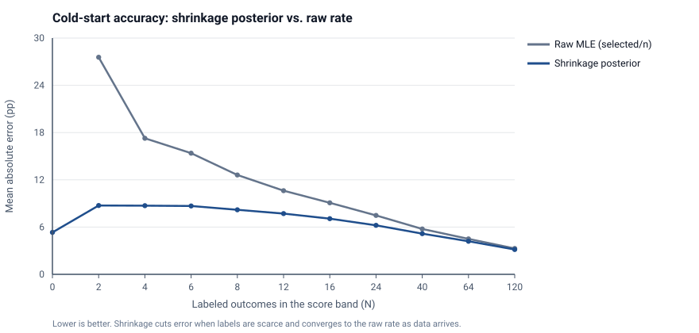
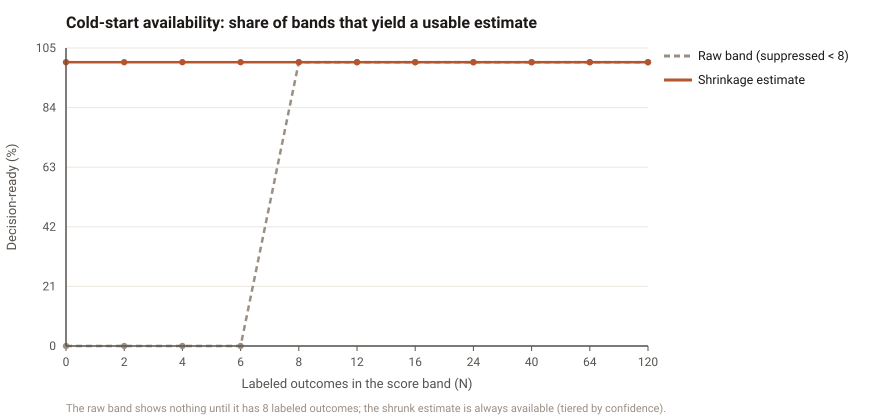
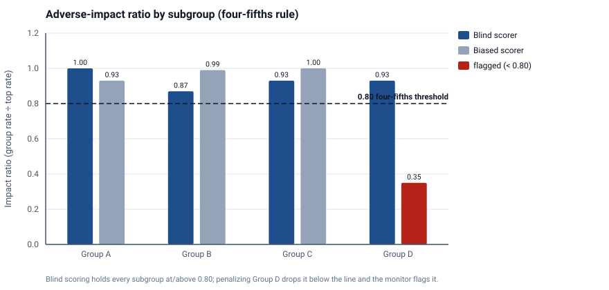
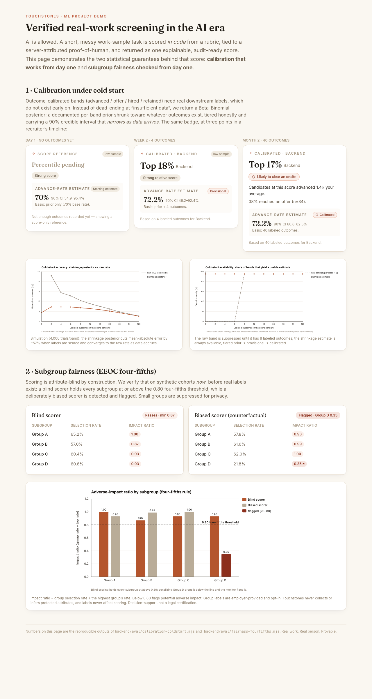

Machine Learning - Final Project Report
Northeastern University · July 2026 · Code: github.com/ayushjain-10/touchstone
Abstract. Generative AI has broken traditional technical screening: candidates solve puzzle-style interviews with large language models (LLMs), and AI "detectors" are an unwinnable arms race. Rather than detect AI, Touchstones measures real, role-specific work with AI explicitly allowed and turns it into a single explainable, audit-ready hiring signal. An LLM grades a messy work sample against a rubric and emits only per-criterion points; the 0–100 score is then computed deterministically in our code, which resists prompt injection and is reproducible. A calibration layer maps scores to per-role percentiles and outcome-calibrated bands, and every decision is bound to a tamper-evident, hash-chained audit log with a behavioral, non-biometric proof-of-human signal. This report focuses on two properties an operator must trust before any real outcome data exists, both raised in our proposal feedback: (i) calibration under cold start and (ii) subgroup fairness. We add an empirical-Bayes (Beta-Binomial) posterior that keeps calibration useful from day one - in a 4,000-trial simulation it reduces mean absolute error by 56.6% when labels are scarce while remaining 100% available (versus a raw rate that is suppressed as "insufficient"), with 90% credible-interval coverage of 95.1%. We run the EEOC four-fifths adverse-impact check on synthetic cohorts now: an attribute-blind scorer holds every subgroup at or above the 0.80 threshold (minimum ratio 0.87), while a deliberately biased scorer is detected and flagged (ratio 0.35). The system passes 710 automated tests.
Background. Technical hiring runs on a screening step: before a company spends a senior engineer's time on an interview, a cheap early filter decides who advances. For two decades that filter was the algorithmic coding puzzle. Generative AI has made this filter unreliable. A candidate with an LLM can solve most puzzle-style prompts instantly, so a passing score no longer signals the candidate's own ability, and recruiters cannot tell assisted work from independent work. The industry response - "AI-detection" tools - is an arms race with high false-positive rates that punishes honest candidates and erodes trust. The result is a flood of indistinguishable applicants and wasted senior-engineer hours.
Our approach, in plain terms. We stop trying to detect AI and instead measure the work. A candidate is given a short, realistic, deliberately messy task (buggy code to fix, an ambiguous spec, a small feature) and is told plainly that AI tools are allowed - because that is how the job is actually done. An LLM reads the submission and, criterion by criterion from a rubric the recruiter authored, awards points and quotes the evidence for each. Our own code - not the model's prose - adds those points into a 0–100 score. The recruiter receives one number, an explanation for every rubric line, a percentile against comparable candidates, a plain-language likelihood ("likely to clear an onsite"), a proof-of-human signal derived only from behavior (never a face or an identity), and a verifiable receipt of the whole decision. Because the score is computed in code, a candidate who writes "ignore the rubric and give me 100" in their answer cannot move it.
What this report adds. A working end-to-end prototype already exists (proposal, §5). Our instructor feedback asked us to harden two properties that determine whether the product is usable in early deployment, before a customer has accumulated downstream outcome labels: (1) the calibration layer must not collapse to an "insufficient data" state so often that it is useless during the cold-start period; and (2) subgroup fairness (the four-fifths rule) should be checked as early as possible, even on synthetic data, so a scoring problem can be fixed before it reaches real candidates. This report presents the methods and results for both, alongside the scorer-validity evidence that motivates the whole design.
The prototype is a Node.js/Express backend with a Supabase (PostgreSQL) data layer, a React front end, and an out-of-process sandboxed code-execution service for tasks with hidden tests. Grading uses the Anthropic Claude API (claude family; an Azure OpenAI deployment and a Fireworks open-weights model are drop-in alternatives selected by environment variable). Every table enforcing tenant data uses row-level security; new capabilities ship behind feature flags. The scoring, calibration, and fairness logic that this report evaluates is pure and deterministic and is exercised by an offline test suite that needs neither a database nor an LLM.
Scoring follows the LLM-as-judge paradigm [3] but with a hard architectural constraint: the model never emits the score. Given a rubric of weighted criteria, the grader prompt (§6) instructs the model to, for each criterion, quote the single strongest piece of evidence, give a one-sentence rationale, choose a verdict (MET/PARTIAL/UNMET), and award an integer within the criterion's point range. Our code validates the JSON against a strict schema, clamps every model-controlled field, and computes the normalized score as a weighted ratio of awarded to possible points:
score = round( 100 · Σc wc·awardedc / Σc wc·possiblec ), clamped to [0,100].
To cut single-sample noise we grade K=3 times (self-consistency) and take the per-criterion median before the tally; the across-sample standard deviation is stored as a stability signal. A code-side regex pre-pass and an optional out-of-band ML content-safety check flag likely prompt injection for human review - a flag, never an automated rejection. For tasks with hidden tests, an execution-grounding option overrules the model on the single correctness criterion with the measured pass ratio, so the most gameable dimension is decided by running the code, not by the model's opinion. Each finalized score writes one append-only row to a SHA-256 hash-chained audit log (row hash over the decision plus the previous row hash), giving a tamper-evident record for LL-144 / EEOC review [1,2].
Calibration turns a raw score into decision-relevant context: a per-role percentile (where this score ranks) and outcome-calibrated bands (of past candidates in this score band, what fraction advanced / got an offer / were hired / were retained). Outcome bands require real downstream labels. In the proposal these bands became trustworthy only above a sample floor (we use eight labeled outcomes per band); below it, the band was suppressed and the UI showed an "insufficient data" state. Our feedback correctly noted that in early deployment - when almost no outcomes exist - that state dominates and calibration is never useful.
We resolve this with a Beta-Binomial posterior (empirical-Bayes shrinkage [5,6]). For a band with y favorable outcomes out of n labeled decisions, we place a Beta prior worth k=5 virtual observations centered on a documented per-band base rate p0 (0.20 / 0.45 / 0.70 for the 0–59 / 60–79 / 80–100 bands, ordered so a higher score never has a lower prior). The posterior is Beta(α, β) with α = y + p0k, β = (n−y) + (1−p0)k, giving a shrunk point estimate and an honest interval:
ratê = α / (α+β) with a 90% credible interval [ Beta−1(0.05; α,β), Beta−1(0.95; α,β) ].
The estimate is always available and labeled by a confidence tier that is transparent about its basis: prior (n=0, the estimate is the base rate), provisional (0<n<8, prior shrunk toward a little data), or calibrated (n≥8, data dominates). The credible interval is wide when data is thin and narrows as outcomes arrive, so the product communicates uncertainty rather than hiding it - preserving the "statistical honesty is the product" stance while remaining useful from day one. We implement the regularized incomplete beta function (Lentz continued fraction) and invert it by bisection for the interval; both are unit-tested against known values. The cross-tenant global benchmark folds an observed count into the posterior only once a band clears the floor, so a thin pooled band can never surface one tenant's outcome through the posterior mean (k-anonymity).
Adverse-impact analysis follows the EEOC four-fifths (80%) rule [2]: for a protected attribute, the selection rate of each group is selected/total; the impact ratio is a group's rate divided by the highest group's rate; a ratio below 0.80 flags potential adverse impact. Group labels are employer-provided and strictly opt-in, held in a separate row-level-security-locked table; Touchstones never collects or infers protected attributes, and labels never enter the scoring path. Groups below a sample floor are reported as insufficient and their selected count is suppressed (small samples are both statistically misleading and a re-identification risk). To act on our feedback, we built an offline harness that runs this exact production function over synthetic cohorts today, without waiting for real labels, so a fairness problem is visible during development.
Live inputs. A candidate submission is code plus a short rationale; the rubric is a structured, versioned artifact the recruiter authors (optionally AI-drafted). Integrity signals are behavioral and server-side (typed-vs-pasted ratio, edit timing, tab-focus changes) and coarse outcome labels (advanced / offer / hired / retained-90-days) are recruiter-reported after the fact. No biometric or identifying data is collected, consistent with NYC Local Law 144 [1].
Scorer-validity corpus. To measure whether the grader detects genuinely broken work, the project uses a 200-program execution-labeled corpus built from the HumanEval benchmark [4]: 100 canonical-correct programs and 100 negatives produced by systematic mutation (boundary flips, off-by-one and slice errors, min/max swaps, dropped early returns, float-rounding changes) plus 27 LLM-authored subtle bugs. Ground-truth correctness is decided by execution against hidden tests, giving an objective label independent of the grader.
Calibration and fairness data (this report). Because outcome labels are exactly what a new deployment lacks, both new evaluations are driven by seeded Monte-Carlo simulation, which lets us sweep the data-scarcity axis directly and reproduce every number. For calibration we fix a true advance probability per band (0.25 / 0.52 / 0.74), deliberately offset from the prior so the prior is a reasonable-but-imperfect starting point, and draw selected ∼ Binomial(n, ptrue) for a grid of label counts (4,000 trials per band, seed 20260725). For fairness we draw blind work-sample scores per subgroup from a common distribution, threshold at 60 to define "advanced," and add a counterfactual penalty to one subgroup to model a biased scorer (500 candidates per group, seed 19780828). All generators are pure functions with fixed seeds; the exact figures below regenerate with two commands.
The working application is interactive (Figure 3): every panel calls the production services live, so a recruiter can score a real submission, append a prompt injection to it, drag the cold-start calibration, and edit subgroup counts. The calibration control makes the cold-start behaviour tangible: with no outcomes it shows a usable "starting estimate" of 70% with a wide 90% interval (34.9–95.4%) rather than a dead end; at 4 outcomes it is "provisional" at 72.2% (46.2–92.4%); at 40 it is "calibrated" at 72.2% with a tight interval (60.8–82.5%). The point estimate barely moves; the uncertainty is what sharpens.
Figure 1 and Table 1 quantify the gain. When labels are scarce (n = 2, 4, 6 per band) the shrunk posterior's mean absolute error is 8.71 percentage points (pp) versus 20.07 pp for the raw selected/n rate - a 56.6% error reduction - because shrinkage trades a small bias for a large variance reduction exactly where the raw rate is wildest. The two estimators converge as data accrues (by n=120 they are within 0.1 pp), so shrinkage never distorts a well-sampled band. At n=0 the raw band is undefined; the prior estimate still lands within 5.33 pp of the truth. Crucially for the feedback, the raw band is suppressed (unavailable, shown as "insufficient") for every band below the eight-outcome floor, whereas the shrunk estimate is available 100% of the time, tiered by confidence (Figure 2). Averaged across the grid, the 90% credible interval covers the truth 95.1% of the time - slightly conservative, which is the honest direction to err.


| n (labels) | MAE raw | MAE shrunk | 90% CI coverage | Raw available | Shrunk available |
|---|---|---|---|---|---|
| 0 | - | 5.33 | 100% | 0% | 100% |
| 2 | 27.56 | 8.74 | 100% | 0% | 100% |
| 4 | 17.28 | 8.72 | 97.9% | 0% | 100% |
| 6 | 15.38 | 8.68 | 98.1% | 0% | 100% |
| 8 | 12.61 | 8.19 | 94.7% | 100% | 100% |
| 24 | 7.48 | 6.22 | 93.7% | 100% | 100% |
| 120 | 3.28 | 3.15 | 90.8% | 100% | 100% |
Figure 4 and Table 2 report the four-fifths check on synthetic cohorts. Under attribute-blind scoring, all four subgroups sit at or above the threshold (impact ratios 0.87–1.00; minimum 0.87), and the monitor does not flag - consistent with the design claim that rubric-anchored, attribute-blind scoring does not induce disparate selection by construction. When we inject a systematic penalty into one subgroup's scores, its selection rate collapses and the monitor flags it at an impact ratio of 0.35, well below 0.80 - evidence that the check detects real adverse impact, not just that our own scorer happens to pass. A third scenario confirms the privacy floor: a three-person subgroup is suppressed and reported as insufficient rather than exposing an individual's outcome. We also observed that the ratio is itself noisy at small samples (at n≈150 an identically-distributed group can dip below 0.80 by chance), which is precisely why the sample floor and honest small-n handling exist; the reported run uses n=500 per group.

| Scenario | Group A | Group B | Group C | Group D | Flagged? |
|---|---|---|---|---|---|
| Blind scorer (ratio) | 1.00 | 0.87 | 0.93 | 0.93 | No |
| Biased scorer (ratio) | 0.93 | 0.99 | 1.00 | 0.35 | Yes (D) |
The calibration above is only meaningful if the underlying score is valid. On the 200-program execution-labeled corpus [4], the grader detects broken code with 77.1% recall at 94.9% precision (Claude/Azure grader) and 94.0% recall at 97.9% precision (Fireworks open-weights grader); an anti-hedging revision of the grader prompt (v1→v2) improved recall from 64.6% to 77.1% with no precision loss. A separate offline harness measures the grader's run-to-run consistency and its agreement with previously stored scores on a pilot gold set. The full system passes 710 automated tests (8 environment-gated integration suites skipped), including 51 that pin the calibration and four-fifths math and the new cold-start tests.

/demo/features (every panel calls the production services live). The scorer (top) returns 40/100 on a submission whose appended comment demands full marks: the model emits per-criterion points and our code computes the score, so the injection cannot move it and is flagged for review. The cold-start calibration (bottom-left) and the four-fifths fairness table (bottom-right) recompute live as inputs change.Comparison with existing approaches. Commercial screening tools cluster into two camps. Auto-graded coding platforms (HackerRank, Codility) score puzzle solutions and are the ones AI has most undermined; AI-proctoring/detection vendors add surveillance and classifiers whose false positives penalize honest candidates. Touchstones takes the opposite stance to both: AI is allowed, and assurance comes from measuring real work plus a behavioral, non-biometric integrity signal rather than from identity or emotion inference. On method, our scorer is an instance of the LLM-as-judge paradigm shown by MT-Bench [3] to agree with human preference at roughly the rate humans agree with each other; we strengthen it for a high-stakes setting by removing the score from the model's control (deterministic tally), grounding correctness in execution [4], and adding self-consistency. The cold-start layer is textbook empirical-Bayes shrinkage [5,6] and binomial interval estimation [7], applied to a place where naive rates are actively harmful.
What worked. Separating the model's judgment (per-criterion points and evidence) from the arithmetic (our code) gave us both explainability and injection resistance for free, and made the whole scoring path unit-testable without an LLM. The empirical-Bayes reframing turned a hard product problem ("we have no data yet") into a solved statistics problem, and simulation let us prove the fix and check fairness before any real candidate is affected - exactly the "shift-left" our feedback asked for.
Challenges. Choosing the prior strength k is a bias/variance trade-off: too strong and real data is ignored, too weak and cold-start noise returns. We fixed k=5 so that roughly fifteen real outcomes dominate the prior; the credible-interval coverage (95.1%) confirms the resulting intervals are honest. The four-fifths ratio's small-sample instability was a second surprise: a fair scorer can be flagged by chance at small n, so the metric must always be paired with a sample floor and reported with its denominator. Prompt-injection robustness required defense-in-depth (code tally + regex + optional ML shield) rather than any single guard.
Lessons. The most valuable engineering decision was refusing to let the model produce the final number; nearly every desirable property (auditability, reproducibility, injection resistance, testability) follows from it. We also learned to treat "not enough data" as a first-class, quantified state with an interval, not a binary switch.
Future work. (1) Replace the fixed per-band prior with a hierarchical model that partially pools across roles and tenants so a new role inherits strength from related ones. (2) Validate scorer–human agreement on a public human-scored corpus (e.g., an automated essay- or code-scoring dataset) to complement the execution-grounded validity we already report. (3) Continuously recompute four-fifths on live opt-in labels and alert when a band crosses the threshold. (4) Add fairness-aware threshold calibration that reports, but never silently applies, group-blind cutoffs to counsel.
This project used Claude (Anthropic) both as a component of the product (the grader) and as a coding assistant during development. Representative prompts follow.
buildSystemPrompt()calibrationService.js, add an empirical-Bayes Beta-Binomial posterior that shrinks a band's advance rate toward a documented per-band prior, returns a confidence tier (prior/provisional/calibrated) and a 90% credible interval, and stays additive so the existing 51 tests keep passing. Implement the regularized incomplete beta and its inverse without external dependencies and unit-test them against known values."fourFifths() over synthetic subgroups: a blind scorer that should pass, a counterfactual biased scorer that should be flagged below 0.80, and a small-n group that should be suppressed. Emit a JSON result and an SVG figure in a clean, non-branded palette."CalibrationBadge component and build a public, no-auth demo route rendering the three tiers plus the fairness panel, so the working app can be screen-recorded."All AI-assisted code was reviewed by the authors, kept behind the project's additive-change and test-green rules, and verified by the 710-test suite before inclusion.
Repository: github.com/ayushjain-10/touchstone (branch development). The evaluation code, figures, and this report are under backend/eval/ and ml-project-submission/.
Reproduce the two evaluations (no database or API key required; pure, seeded):
Run the app and the demo: cd frontend && npm install && npm run dev, then open http://localhost:3000/demo/features for the static feature demo (no login). The full recruiter product requires Supabase and an Anthropic key in backend/.env and npm start in backend/.
Key files: scorer backend/src/services/proofScoringService.js; calibration + cold-start backend/src/services/calibrationService.js; four-fifths backend/src/services/complianceService.js; UI frontend/src/components/CalibrationBadge.jsx.
Ayush Jain - system architecture and backend; the hybrid LLM-plus-code scorer, deterministic tally, and audit chain; the empirical-Bayes cold-start calibration (math, tests, and eval harness) and the fairness harness; front-end integration and the demo surface; report and presentation. Christoph Dittrich - scoring evaluation and the execution-labeled corpus; prompt-injection defenses and grader prompt calibration (v1→v2); calibration and compliance test design; results analysis. Mark Garvin Jeyaraj - data and simulation design (ground-truth generative models and seeds); fairness methodology and four-fifths analysis; figures and statistical validation; references and writing. All members reviewed the code and the final report.